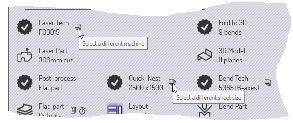
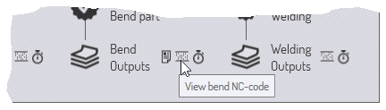

Flux de travail de la pièce
Comme TecZone Bend comporte de nombreux modules intégrés, il existe souvent plusieurs chemins d’accès par lesquels les données de pièce peuvent circuler.
Exemple 1 : lorsque vous chargez des données de pièce plate (à partir d’un fichier GEO ou d’un fichier DXF), vous pouvez choisir de :
-
Assigner une préparation laser à la pièce, afin qu’elle puisse être placée sur une tôle et découpée, avec d’autres pièces.
-
Réaliser un pli écrasé de la pièce le long des lignes de pliage en une pièce 3D, de sorte qu’elle puisse être usinée et qu’une phase de pliage puisse être calculée pour une presse plieuse.
Exemple 2 : lorsque vous importez un modèle de surface 3D (à partir d’un fichier IGES ou STEP), vous pouvez choisir de :
-
Analyser les surfaces et placer la préparation de CAM laser à 5 axes le long des ouvertures qui doivent être coupées.
-
Effectuer la reconnaissance des caractéristiques, convertir le modèle de surface en un modèle de tôle, puis le développer en un modèle plat pour le poinçonnage à l’aide d’une presse à poinçonnage.
Le panneau Flux de travail

Le panneau Workflow est comme un tableau de bord central à partir duquel vous pouvez diriger tous ces mouvements. Lorsque vous avez une pièce ouverte, vous pouvez toujours afficher le panneau Flux de travail en appuyant simplement sur W ou en cliquant sur l’icône de flux de travail dans la barre de commandes sur la gauche. Explorons le panneau Flux de travail ; commencez par importer une pièce 2D avec des paramètres de pliage (un fichier GEO, par exemple).A ce stade, le panneau Flux de travail affiche ce qui suit :
-
Nous avons commencé avec Bend_28.geo, nous l’avons importé et nettoyé pour créer une pièce en tôle 2D (les dimensions de la pièce sont affichées)
-
Il y a alors une branche dans le flux de travail.
-
Nous pourrions affecter la technologie laser à la pièce (cela signifie simplement attribuer des trajectoires de découpe laser aux contours de pièce).
-
Nous pourrions réaliser un pli écrasé de la pièce plate en 3D (9 pliages sont détectés).
-
Expansion des nœuds de flux de travail : étape 1
Cliquez sur l’icône de technologie laser pour affecter une préparation laser à la pièce. Vous verrez que la pièce est immédiatement analysée et qu’une préparation laser y est ajoutée. Ensuite, cliquez sur l’icône Pli écrasé en 3D pour réaliser un pli écrasé de la pièce plate en 3D. Après ces étapes, voici à quoi ressemble le panneau Flux de travail :

Comme le montrent les annotations, il existe différents types de nœuds dans le schéma de flux de travail.
-
Il existe des nœuds de vue de pièce représentant les différents types d’usinage que l’on peut effectuer sur la pièce. Cliquez sur ces nœuds pour passer à cette vue et afficher l’ensemble des opérations disponibles pour la pièce dans cette vue. Par exemple, dans la vue Pièce laser, vous pouvez voir et modifier la préparation laser attribuée à la pièce.
-
Vous pouvez basculer entre ces vues en cliquant sur ces icônes. Toutes ces différentes vues de pièces disposent également de raccourcis clavier, que vous pouvez voir en plaçant simplement la souris sur l’une des icônes d’affichage. Apprenez ces raccourcis clavier pour naviguer rapidement dans le flux de travail. Ainsi, après un certain temps, vous utiliserez les séries de touches telles que WBEsc pour ouvrir le panneau Flux de travail, passer à la vue de la pièce à plier, puis fermer le panneau Flux de travail.
-
Les données de pièce sont transmises entre ces nœuds par divers processus, qui sont représentés dans le panneau Flux de travail à l’aide d’icônes en forme d’étoile à 13 branches. Par exemple, vous passez de la vue Pièce 2D à la vue Pièce laser à l’aide du processus de technologie laser (qui analyse la pièce 2D et lui attribue une préparation laser).
Les processus que vous avez terminés sont signalés par une coche. Les processus que vous n’avez pas encore terminés (mais qui sont disponibles) sont signalés par une croix. Vous pouvez cliquer sur ces nœuds de processus pour terminer le processus.
Résumons ce que nous pouvons voir à ce stade du flux de travail de notre pièce :
-
Trois vues sont désormais disponibles (la vue 2D, la vue Laser et le modèle 3D, entre lesquelles vous pouvez basculer).
-
Quatre autres processus sont disponibles :
-
Nous pouvons effectuer un réusinage de pièce plate (cela génère un rapport de pièce plate qui sera utile à un opérateur laser ou à un opérateur de presse à poinçonner ; il comprend généralement les temps de découpe laser, le serrage pour les presses à poinçonner et d’autres exigences particulières en matière de préparation pour cette pièce).
-
Nous pourrions faire une imbrication rapide (une imbrication rapide est une imbrication qui ne contient qu’un seul type de pièce) et générer une tôle complète contenant cette pièce. Cela pourrait servir à produire une tôle contenant uniquement cette pièce, ou à estimer rapidement le coût ou le temps nécessaire à la fabrication de cette pièce.
-
Nous pourrions attribuer une technologie de pliage (préparation pour presse plieuse) pour la pièce.
-
Nous pourrions assigner une technologie de soudage (préparation pour robot de soudage) pour la pièce.
-
Expansion des nœuds de flux de travail : étape 2
Allons plus loin : cliquez sur tous les nœuds de processus disponibles un par un et observez comment le panneau Flux de travail se développe. Continuez jusqu’à ce que vous n’ayez plus de nœuds à gauche. Voici à quoi cela devrait ressembler après ces processus :

Dans cet état entièrement développé, le panneau Flux de travail vous permet de passer facilement et instantanément entre six vues différentes de la pièce dans divers modules d’usinage. Vous pouvez également consulter, transmettre ou imprimer toutes les différentes sorties générées par ces modules. (Les résultats peuvent être des rapports, des programmes CN ou des études de temps).
Navigation dans le panneau Flux de travail
Le panneau Flux de travail affiche de nombreuses informations et opérations sous une forme graphique compacte. La plupart du temps, cela vous servira de tableau de bord lorsque vous travaillerez avec des pièces. Examinons de plus près certaines icônes du panneau Flux de travail afin de comprendre comment elles peuvent être utilisées.
Nœuds de processus disponibles
Une étoile à 13 branches avec un + à l’intérieur représente une étape de l’usinage qui est désormais disponible. Il peut s’agir, par exemple, de la réalisation de plis écrasés d’une surface plane en 2D pour obtenir une pièce en 3D, ou de l’affectation de préparation utilisant la technologie laser. Passez la souris sur un tel nœud pour afficher une info-bulle qui explique ce que fait le nœud.

Cela suit un schéma typique pour de nombreux nœuds d’usinage disponibles. Cliquez sur le nœud pour exécuter le processus avec les réglages par défaut. Effectuez la combinaison Ctrl+Click sur le nœud pour afficher d’abord une page de réglages. Une fois que vous avez vérifié/modifié les réglages, l’usinage est exécuté. Par exemple, voici ce qui s’affiche lorsque vous faites la combinaison Ctrl+Click sur le nœud d’imbrication rapide :

Les réglages d’imbrication rapide s’affichent afin que vous puissiez les modifier avant d’effectuer l’imbrication.
Nœuds d’usinage terminés
Une fois qu’un usinage est terminé, le nœud passe d’un nœud d’usinage disponible à un nœud d’usinage terminé ; l’icône devient une étoile avec une coche à l’intérieur. A ce stade, les options disponibles pour ce nœud changent.

Il s’agit d’un ensemble typique d’options disponibles sur un nœud d’usinage terminé. En cliquant sur le nœud, les réglages d’usinage s’affichent à nouveau, ce qui vous permet de les modifier et de relancer l’usinage. L’option Ctrl+Click est également généralement disponible pour supprimer les données d’usinage. Si vous choisissez cette option, vous serez invité à confirmer la suppression avant qu’elle ne soit effectuée. Par exemple, voici ce qui se passe lorsque vous effectuez la combinaison Ctrl+Click sur le nœud Modèle 3D pour une pièce entièrement usinée :

Commandes auxiliaires
De nombreux nœuds sont accompagnés de petites icônes qui fournissent des commandes auxiliaires. Ces commandes fournissent certaines fonctionnalités liées à ce nœud. Voici quelques exemples.
-
Les icônes auxiliaires situées à proximité de chaque nœud technologique vous permettent généralement de sélectionner une machine différente et de configurer cette machine.
 -
L’icône située à côté du nœud d’imbrication rapide vous permet d’imbriquer à un format de tôle différent.
-
Les icônes situées à proximité des nœuds de sortie vous permettent de visualiser les différentes sorties d’un nœud d’usinage (rapports, programmes CN ou études de temps).

Suivi du fichier source

La plupart des usinages dans TecZone Bend commencent par l’importation de données CAO (en 2D ou 3D). Les pièces TecZone Bend qui sont fabriquées à partir de ces données CAO peuvent continuer à suivre ces pièces source. Lorsqu’une pièce est ouverte, TecZone Bend peut vérifier si le fichier CAO original à partir duquel elle a été créée a été modifié entre-temps. Si c’est le cas, la pièce est désormais obsolète et cela est visible dans le panneau Flux de travail.
-
Vous pouvez choisir d’actualiser la pièce en cliquant sur l’icône auxiliaire d’actualisation de la pièce située près du nœud de la pièce source. TecZone Bend réimportera la géométrie CAO et fabriquera la pièce à nouveau.
-
Vous pouvez également choisir d’arrêter le suivi de la géométrie CAO d’origine. Cela peut s’avérer utile, par exemple, si le fichier CAO d’origine se trouve sur un support amovible ou sur un lecteur distant qui pourrait ne plus être accessible à l’avenir.Pour ce faire, cliquez sur l’icône auxiliaire permettant de rompre le lien près du nœud de la pièce source. Cela affichera une invite vous demandant d’arrêter le suivi du fichier source :

Synthèse
Voici un bref résumé des principes du panneau Flux de travail.
-
Le panneau Flux de travail affiche des nœuds représentant différentes vues de pièces (telles que pièce laser, pièce pliée) et des nœuds représentant différents processus (tels que le pliage 3D, l’attribution d’une préparation laser).
-
Les nœuds d’usinage disponibles (non encore exécutés) sont représentés par des étoiles à 13 branches avec un signe à l’intérieur. Les nœuds d’usinage déjà terminés sont représentés par des étoiles contenant une marque à l’intérieur.
-
Cliquez sur un nœud d’usinage disponible pour lancer cet usinage avec les réglages par défaut. La combinaison Ctrl+Click sur un nœud d’usinage disponible permet d’afficher un éditeur pour modifier les réglages d’usinage, puis lance l’usinage.
-
Cliquez sur un nœud d’usinage terminé pour modifier les réglages d’usinage et appliquer l’usinage à nouveau. La combinaison Ctrl+Click sur un nœud d’usinage terminé supprime les données d’usinage.
-
Les petites icônes auxiliaires situées à proximité d’un nœud d’usinage ou d’un nœud de vue de pièce permettent de modifier certains réglages importants de ce nœud d’usinage (tels que la machine cible ou le format de tôle d’imbrication).